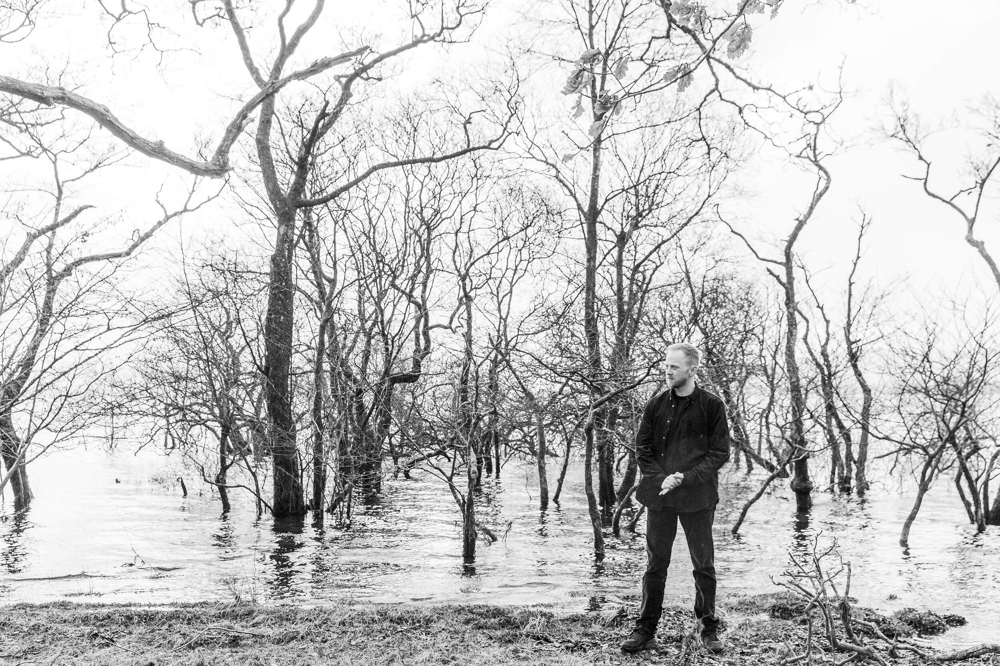

Astrola
Astrola, also known as Scott Ramsay, is a producer from Glasgow, Scotland. Drawing inspiration from producers such as Ben Böhmer, Lane 8, Marsh, Klur, Sultan + Shepard and CRi, his signature sound is characterized by chilled yet cinematic melodies, inviting listeners to immerse themselves in the moment.
Listen to musicDiscography
4 Releases
About

Astrola, the musical
project of
Scott Ramsay from Glasgow, Scotland, creates cinematic, chilled melodies that invite listeners to dive
into immersive soundscapes. Inspired by artists like Ben Böhmer, Lane 8, Marsh, and Sultan + Shepard,
his music blends emotive depth with melodic electronic elements.
Astrola's debut album "In These Moments" (April 26, 2024) reflects his journey in the world of melodic
deep house and the second album "Time", released on July 18, 2025, featuring tracks like
"Particles" and "Haze," - expanding his signature sound further.
Drawing influence from the stunning landscapes of
Scotland, Astrola's work embodies a unique fusion of melodic traditions, marking his place in the
evolving electronic
scene.
Socials
__
EMAIL
scott@astrolamusic.com
Follow